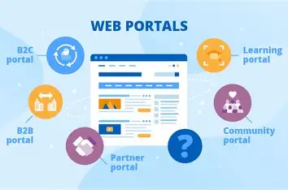

A web portal is a specially designed website that brings information from diverse sources, like emails, online forums and search engines, together in a uniform way. Usually, each information source gets its dedicated area on the page for displaying information (a portlet); often, the user can configure which ones to display. Variants of portals include mashups and intranet dashboards for executives and managers. The extent to which content is displayed in a "uniform way" may depend on the intended user and the intended purpose, as well as the diversity of the content. Very often design emphasis is on a certain "metaphor" for configuring and customizing the presentation of the content (e.g., a dashboard or map) and the chosen implementation framework or code libraries. In addition, the role of the user in an organization may determine which content can be added to the portal or deleted from the portal configuration.
Again, there is a lot of portals available on the internet. For example: Learning portals for universities
